核苷酸：DNA 和 RNA 的積木
- 4-1 證明 DNA 是遺傳物質。要懂它怎麼存訊息，先看它由什麼組成。
- 核酸分兩種：去氧核糖核酸（DNA）和核糖核酸（RNA）。1940年前已知兩者都由核苷酸一個接一個連成（聚合物）。
- 每個核苷酸＝含氮鹼基＋五碳醣＋磷酸三部分。
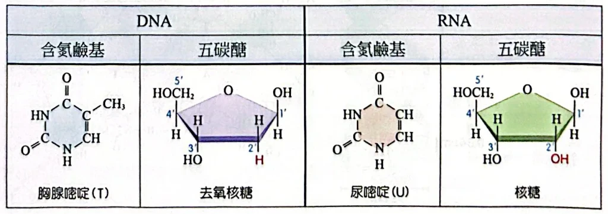
DNA 與 RNA 核苷酸的差異：胸腺嘧啶(T)↔尿嘧啶(U)、去氧核糖（2′只有H）↔核糖（2′有OH）原講義PDF第5頁・印刷第113頁・點圖放大
查加夫法則與 X 光繞射
- 1950年，查加夫分析許多物種的 DNA，得到兩個結果：
- 不同物種，四種鹼基的比例不同 → 物種特異性（DNA 能區分物種）。
- 同一物種中，A 的量≈T，G 的量≈C → 查加夫法則。
- 1952年，富蘭克林用 X 光照 DNA 晶體，拍到清楚的繞射圖，暗示 DNA 是螺旋形。
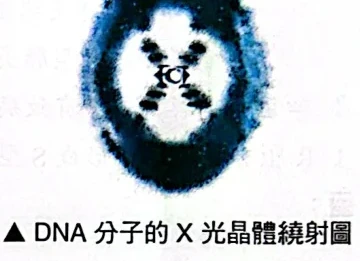
富蘭克林拍到的 DNA X 光繞射圖：X 形花紋暗示螺旋構造原講義PDF第6頁・印刷第114頁・點圖放大
華生與克里克的雙股螺旋
- 1953年，華生和克里克參考查加夫和富蘭克林的結果，提出 DNA 雙股螺旋模型。
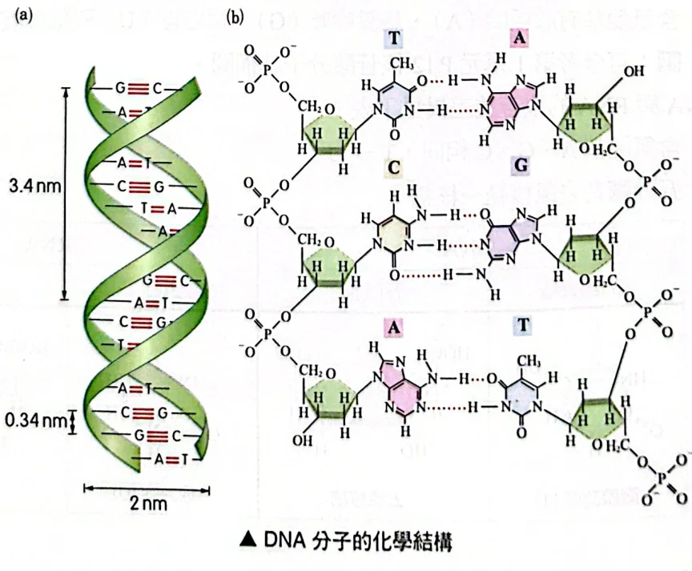
(a) 雙股螺旋：直徑 2 nm、每圈 3.4 nm（10 對）、相鄰鹼基 0.34 nm；(b) A–T 兩個氫鍵、G–C 三個氫鍵，兩股方向相反原講義PDF第6頁・印刷第114頁・點圖放大
自繪圖解：上股 5′→3′、下股 3′→5′（反向平行）；A–T 兩條氫鍵、G–C 三條氫鍵
中心法則與 DNA、RNA 比較
- 中心法則：遺傳訊息的流向。
- 複製：DNA → DNA，讓細胞分裂時每個子細胞都有一套。
- 轉錄：DNA → mRNA（在細胞核）。
- 轉譯：mRNA → 蛋白質（在細胞質的核糖體）。
- 蛋白質（如酵素）才真正執行功能，所以 DNA 透過「做出哪些蛋白質」來決定性狀。轉錄、轉譯的細節在下一篇 4-3。
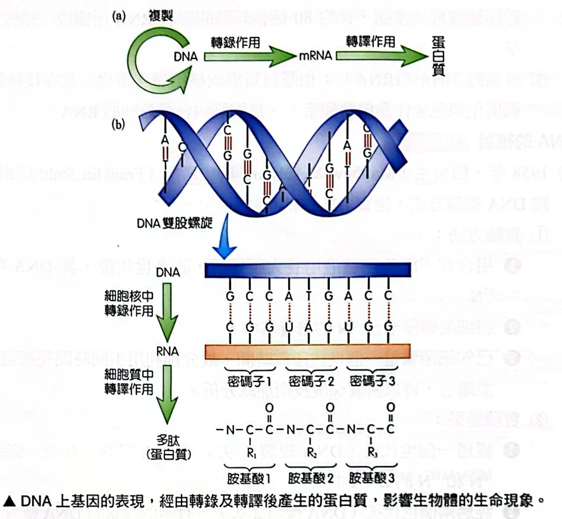
中心法則：DNA 複製；DNA →（轉錄）→ mRNA →（轉譯）→ 蛋白質原講義PDF第7頁・印刷第115頁・點圖放大
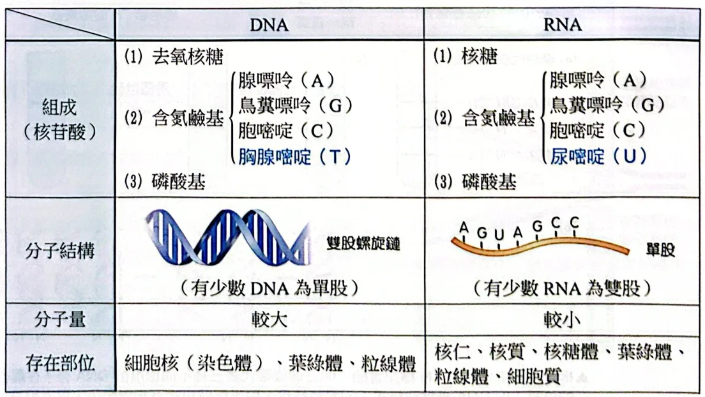
DNA 與 RNA 的比較：組成、分子結構、分子量、存在部位原講義PDF第7頁・印刷第115頁・點圖放大
RNA 的三種類型
半保留複製：梅舍生與史塔爾
- 雙股 DNA 複製時，舊的兩股去了哪裡？有三種可能：
- 保留複製：舊雙股原封不動，另做一條全新的雙股。
- 半保留複製：兩股分開，各自當模版 → 每個新 DNA ＝ 1 舊股＋1 新股。
- 分散複製：新舊片段混在每一股中。
- 1958年，梅舍生和史塔爾用氮的同位素分辨新舊股：DNA 鹼基含氮；15N 比 14N 重 → 含 15N 的 DNA 密度大，離心時沉得較低。
- 做法：大腸桿菌先在 15N 中養很多代（DNA 全是重的）→ 移到 14N（新股是輕的）→ 每複製一次取 DNA 離心。
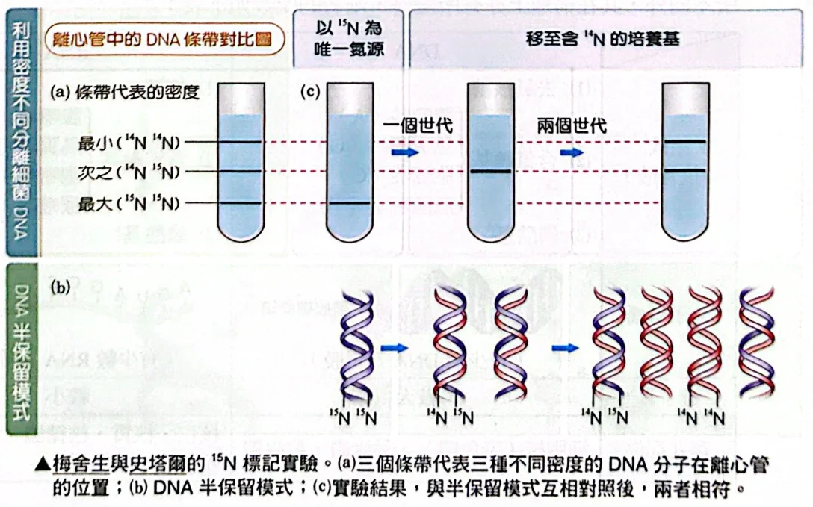
梅舍生與史塔爾的 ¹⁵N 標記實驗：一代後只有中間帶；兩代後中間帶與輕帶等量 → 半保留複製原講義PDF第8頁・印刷第116頁・點圖放大
自繪圖解：每一代，兩條舊股永遠只留在兩個 DNA 裡；其餘都是全新的輕 DNA
DNA 複製的過程
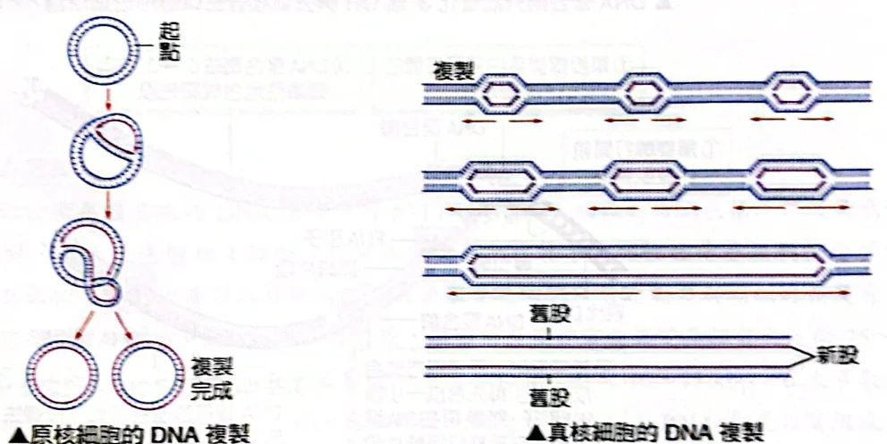
左：原核細胞環狀 DNA 從一個起點雙向複製；右：真核細胞 DNA 有多個複製泡，最後連成一條原講義PDF第9頁・印刷第117頁・點圖放大
- 複製是雙向進行：從起始點往兩邊同時展開，直到整個分子複製完。
- 原核細胞的環狀 DNA 只有一個起始點；真核細胞的 DNA 很長，有許多起始點同時複製，才能及時做完。
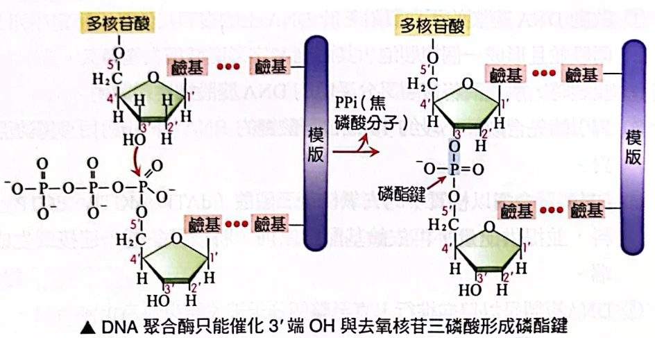
DNA 聚合酶只能把新的核苷酸接到 3′ 端的 OH 上，形成磷酸二酯鍵，並放出焦磷酸（PPi）原講義PDF第10頁・印刷第118頁・點圖放大
- DNA 聚合酶有一個限制：只能把核苷酸接在 3′ 端的 OH 上 → 新股只能 5′→3′ 方向延長。
- 聚合酶也不能從零開始，需要一段已配對的短鏈當起點 → 所以要先做 RNA 引子。
- 兩股模版方向相反（第3節），所以兩條新股的合成方式不同：
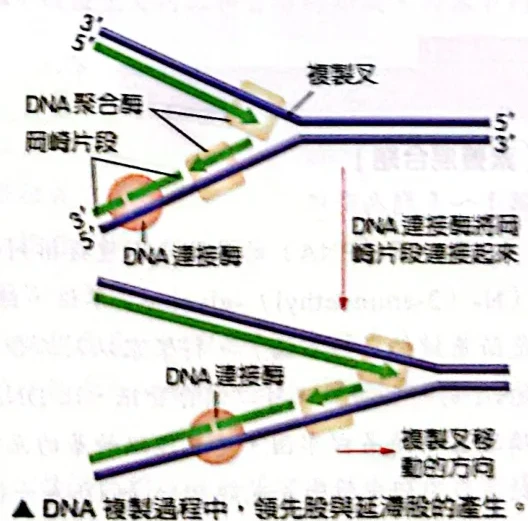
複製叉：領先股連續合成；延滯股合成一段段岡崎片段，再由 DNA 連接酶接起來原講義PDF第9頁・印刷第117頁・點圖放大
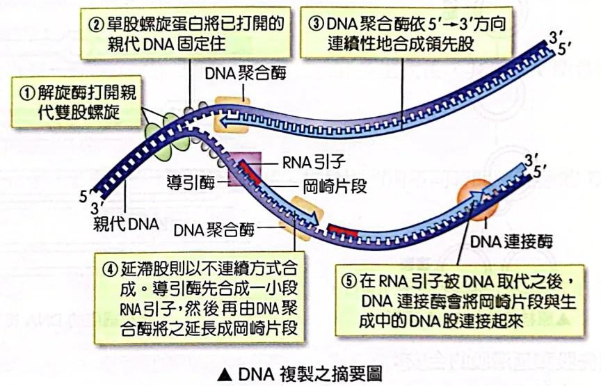
DNA 複製摘要：①解旋酶 ②單股結合蛋白 ③領先股連續合成 ④延滯股：引子＋岡崎片段 ⑤連接酶接合原講義PDF第10頁・印刷第118頁・點圖放大
經典演練：PNA 題組 1–5
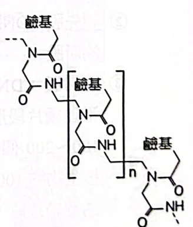
PNA 的骨架：重複的 N-(2-胺乙基)-甘胺酸單位以肽鍵相連，側邊接鹼基原講義PDF第10頁・印刷第118頁・點圖放大
右圖為核苷酸的示意圖（甲＝磷酸、乙＝五碳醣、丙＝含氮鹼基），構成 RNA 的骨架包括其中哪些部分？
(A) 只有甲 (B) 只有乙 (C) 只有丙 (D) 甲與乙 (E) 乙與丙
看答案與詳解收起
答D。
解- 核苷酸連成長鏈時，是一個核苷酸的磷酸接到下一個核苷酸五碳醣的 3′ 碳 → 醣、磷酸交替排成一條「骨架」。
- 鹼基（丙）掛在骨架側邊，負責配對與帶訊息，不是骨架。
- 所以骨架＝甲（磷酸）＋乙（五碳醣）。
下列關於 DNA、RNA、PNA 的比較，何者正確？
(A) 只有 RNA 具有酵素的功能 (B) PNA 具有酵素的催化能力 (C) DNA 與 RNA 都無法經由人工方式合成 (D) PNA 利用胜肽序列儲存訊息
看答案與詳解收起
答A。
解- (A) 對：題目比較的是 DNA、RNA、PNA 三者。題幹說許多 RNA 具催化能力；DNA 在正文中只當遺傳物質；PNA「目前仍未被發現能催化反應」→ 三者之中只有 RNA 有酵素功能。（三者以外，蛋白質當然也是酵素，但不在比較範圍內。）
- (B) 錯：題幹明說 PNA 尚未被發現能催化。
- (C) 錯：題幹提到「人工合成的 RNA」也有催化能力，可見 RNA 能人工合成；DNA 也能人工合成（例如 PCR 用的引子）。
- (D) 錯：PNA 的骨架雖以肽鍵相連，但它存訊息靠的是鹼基的順序（能與 DNA、RNA 互補配對），不是胜肽（胺基酸）序列。
小結存訊息一律看「鹼基順序」；能催化的核酸是 RNA。
由第 1 題圖甲～丙中哪一種構造得知此為構成 RNA 的核苷酸？
看答案與詳解收起
答乙（五碳醣）：它的 2′ 碳上接的是 OH，是核糖，所以是 RNA 的核苷酸。
解- 甲（磷酸）：DNA、RNA 的磷酸一樣 → 無法區分。
- 丙（鹼基）：圖中是腺嘌呤（A），DNA、RNA 都有 A → 無法區分。（若是 T 或 U 才能從鹼基判斷。）
- 乙（五碳醣）：右下方 2′ 碳接 OH → 核糖；DNA 的去氧核糖在這個位置只有 H。
小結A、G、C 兩者都有，認 RNA 要看 2′-OH（或看到 U）。
DNA、RNA、PNA 中，何者具有儲存遺傳資訊的功能？
看答案與詳解收起
答三者都可以。
解- 能存訊息的條件：有可以任意排列的鹼基序列，而且能用互補配對被讀出或複製。
- DNA：一般生物的遺傳物質。RNA：mRNA 帶著基因訊息；有些病毒（如 HIV）的遺傳物質就是 RNA。
- PNA：題幹說它「可以儲存資訊」，並能以鹼基互補與 DNA、RNA 連結。
DNA、RNA、PNA 三者均屬於聚合物，其單體共有的部分為何？
看答案與詳解收起
答含氮鹼基。
解- DNA 單體：去氧核糖＋磷酸＋鹼基。
- RNA 單體：核糖＋磷酸＋鹼基。
- PNA 單體：N-(2-胺乙基)-甘胺酸（沒有五碳醣、沒有磷酸）＋鹼基。
- 三者都有的只有含氮鹼基，這也是三者能互相配對的原因。
經典演練：端粒題組 6–9
下列何種微生物具有反轉錄酶？
(A) HIV (B) 腺病毒 (C) 噬菌體 (D) 大腸桿菌
看答案與詳解收起
答A。
解- 反轉錄酶：以 RNA 為模版做出 DNA。只有遺傳物質是 RNA、又要把基因嵌入宿主 DNA 的病毒需要它 → 反轉錄病毒。
- HIV（愛滋病毒）的遺傳物質是 RNA，進入細胞後先反轉錄成 DNA → 有反轉錄酶。
- 腺病毒、噬菌體（如 4-1 的 T2）遺傳物質是 DNA；大腸桿菌是細菌，DNA 用一般方式複製 → 都不需要反轉錄酶。
端粒酶與下列哪些細胞的構造有相同化學組成？（多選）
(A) 核糖體 (B) 內質網 (C) 細胞骨架 (D) 粒線體 (E) 核仁
看答案與詳解收起
答AE。
解- 端粒酶＝RNA＋蛋白質。
- (A) 核糖體＝rRNA＋蛋白質 ✓。
- (E) 核仁是製造核糖體的地方，主要成分是 rRNA 和蛋白質 ✓。
- (B) 內質網是膜構造，主要是磷脂質＋蛋白質 ✗。(C) 細胞骨架是蛋白質纖維 ✗。(D) 粒線體有雙層膜，還有自己的 DNA、核糖體，組成比端粒酶複雜得多 ✗。
小結「RNA＋蛋白質」的組合：核糖體、核仁（以及端粒酶）。
下列有關端粒與端粒酶的敘述，哪些正確？（多選）
(A) 端粒愈長，保護染色體的能力愈佳 (B) 端粒愈長，細胞老化的程度愈大 (C) 端粒愈長，動物的平均壽命愈長 (D) 端粒酶的活性愈大，細胞分裂的能力愈佳 (E) 端粒酶的活性愈大，細胞癌變的程度愈大
看答案與詳解收起
答AD。
解- (A) 對：端粒的功能是保護末端；它愈長，能被「磨短」的餘裕愈多，基因愈不會受損。
- (B) 錯：反過來。每次分裂端粒變短，短到某程度細胞才老化、停止分裂。
- (C) 錯：題幹的跨物種資料是反例——老鼠端粒 25～150 kbp 比人類長得多，壽命卻只有 2～3 年。
- (D) 對：端粒酶能把端粒延長，抵銷每次複製的縮短 → 細胞可以繼續分裂（癌細胞能無限分裂就是一例）。
- (E) 錯：題幹只說「癌變後端粒酶活性明顯增高」，這是癌細胞的特徵；不能反推「活性愈大、癌變程度愈大」的數量關係。
原頁沒有附答案，以上依題幹資料判斷。
小結端粒變短→老化；端粒酶延長端粒→能持續分裂。跨物種比壽命不能只看端粒長度。
端粒酶以自身的 RNA 作為端粒 DNA 複製的模版，請問此模版的核苷酸序列為何？（需標明方向性）
看答案與詳解收起
答3′-AAUCCC-5′（也就是 5′-CCCUAA-3′）。
解- 要做出的 DNA 是 5′-TTAGGG-3′，模版必須和它互補且反向平行。
- 逐一配對：T→A、T→A、A→U（模版是 RNA，沒有 T）、G→C、G→C、G→C。
- 對齊寫法：
DNA 5′- T T A G G G -3′
RNA 3′- A A U C C C -5′ - 從 5′ 端開始讀就是 5′-CCCUAA-3′。
小結寫互補序列三件事：配對、RNA 用 U、方向反過來。
本篇整理
下一篇：DNA 的訊息怎麼轉錄成 mRNA、再轉譯成蛋白質。
核對原講義全頁（生物2 PDF5–11）
本節對應印刷113下半–119頁：PDF5下半–10上半是概念2 核酸的構造與複製，PDF10下半–11是經典演練2.0素養混合題1–9（PNA題組1–5，104全國模考修訂；端粒題組6–9，科學新知）。PDF5上半是上一篇4-1的演練3、4。原頁沒有附答案，本頁答案依題幹與正文逐題推導。
 PDF第5頁／印刷第113頁
PDF第5頁／印刷第113頁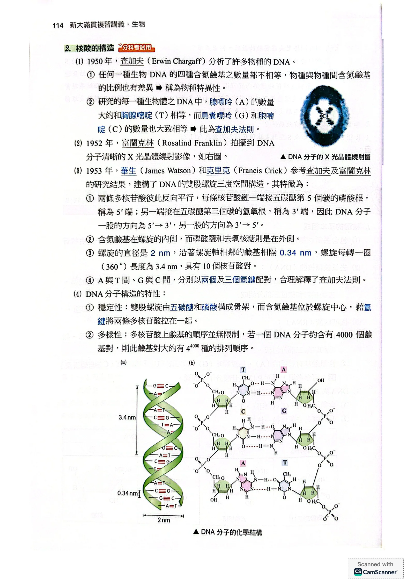
PDF第6頁／印刷第114頁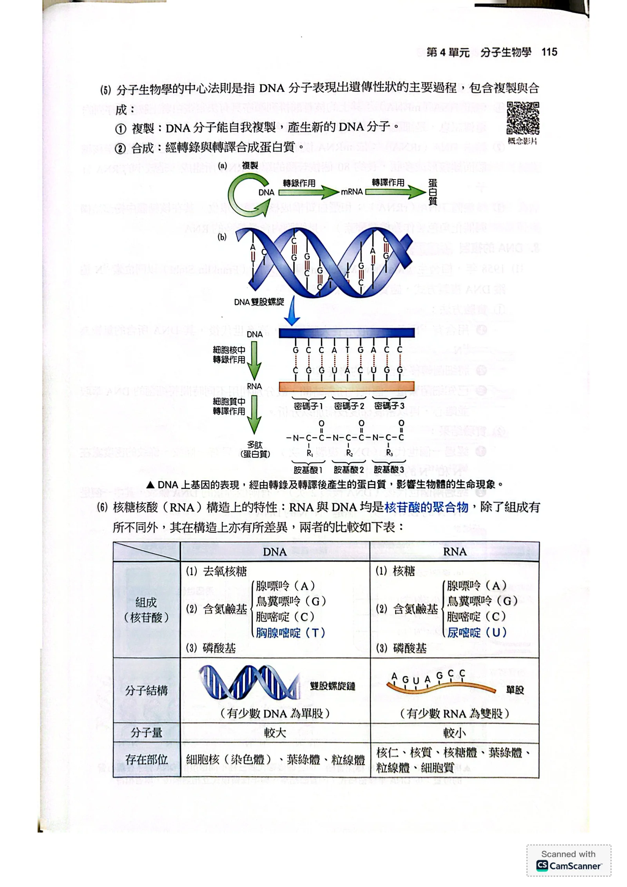
PDF第7頁／印刷第115頁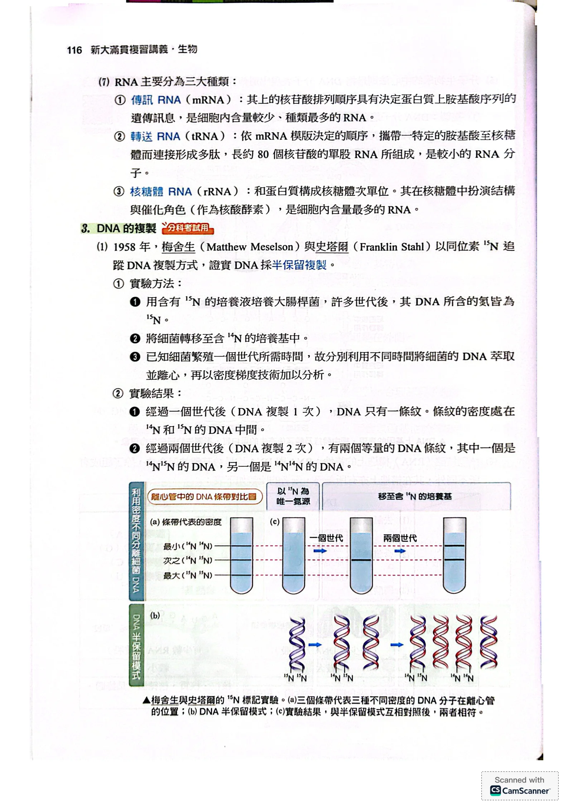
PDF第8頁／印刷第116頁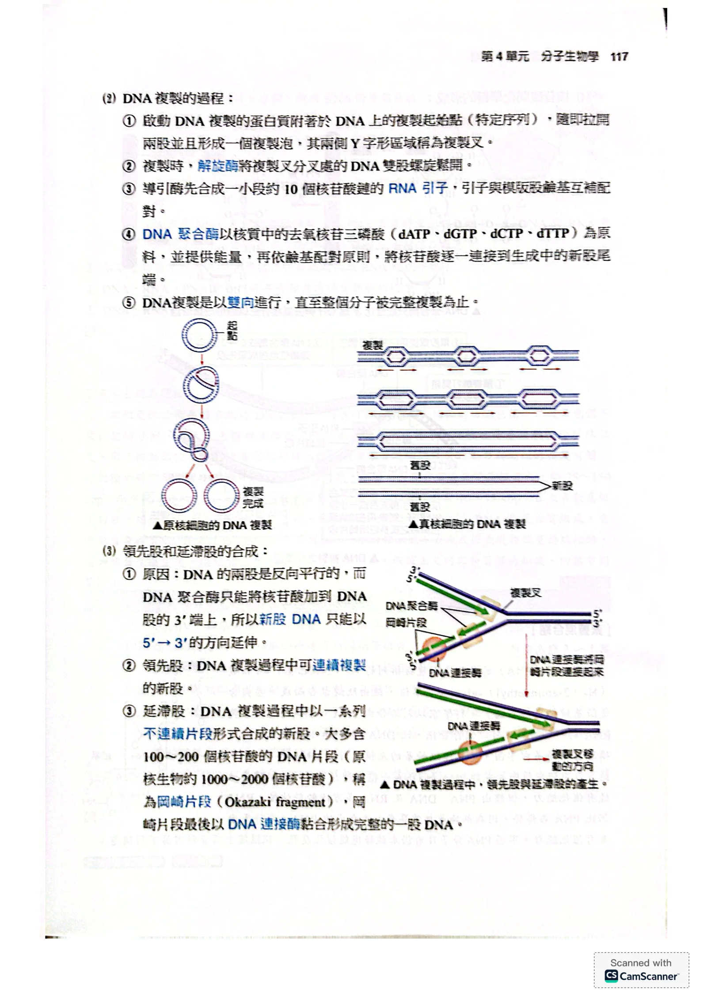
PDF第9頁／印刷第117頁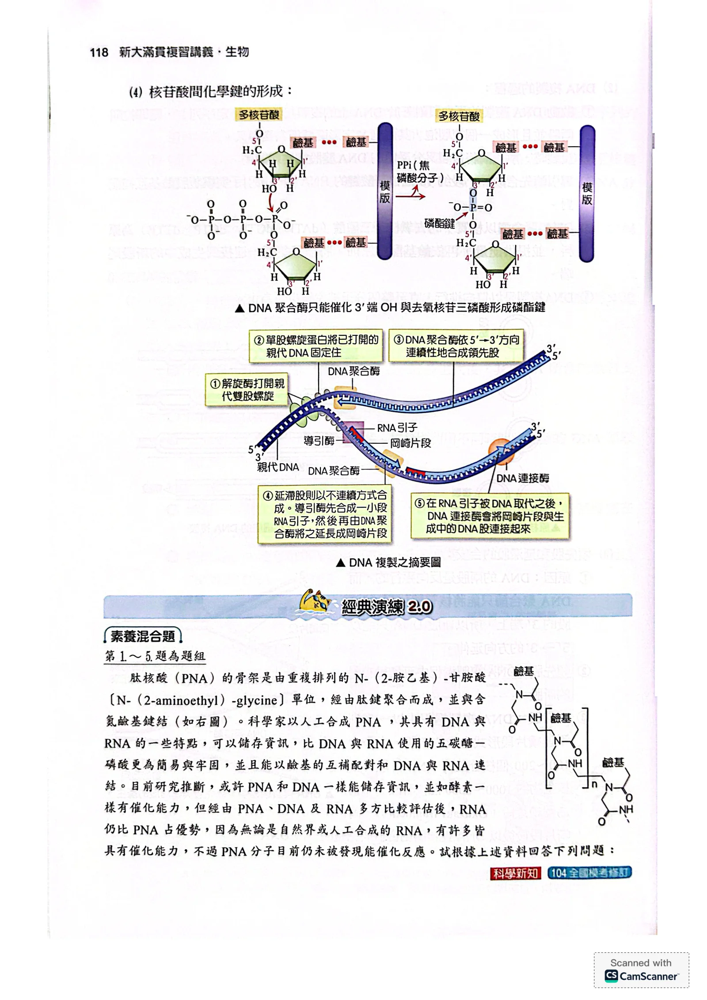
PDF第10頁／印刷第118頁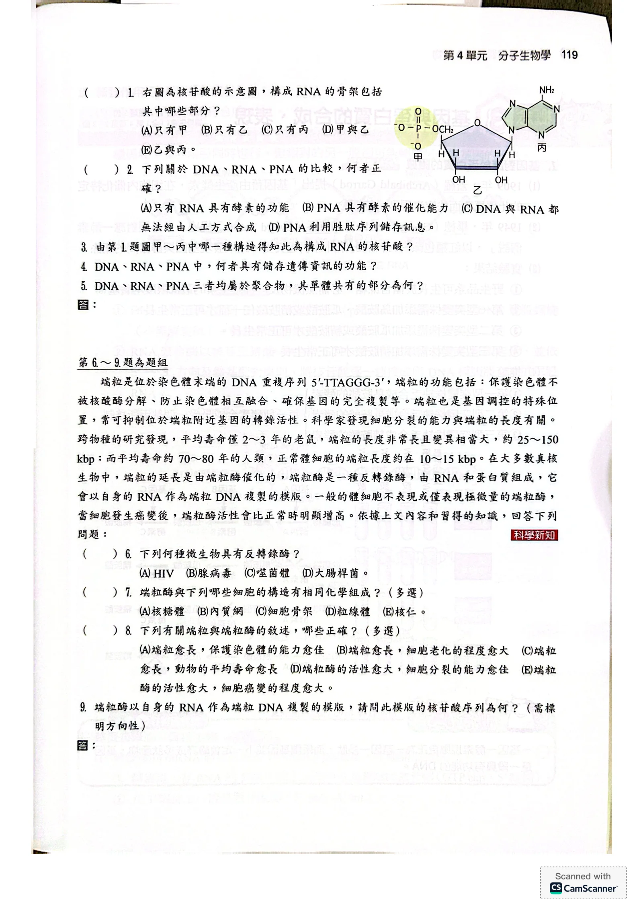
PDF第11頁／印刷第119頁